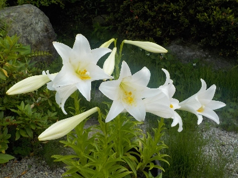
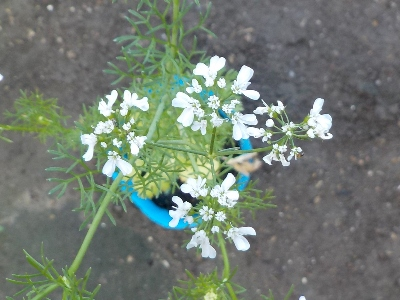

遊びで植物を育てよう
2025/06/18
鉄砲ユリが咲きました。

沢山花が付いたので、奇麗です。
育ててよかった。育てて良かったって思う花と、そうでもないなって思う花の違いってなんなんでしょうね？
好みの問題なんだろうな。
【6月TOP】
【日記TOP】
【園芸TOP】
2025/06/15
今年もパクチーは上手く成長させることが出来ませんでした。

今年もパクチーの種蒔きをしましたが、発芽状況が悪かったです。
ちょっとだけを植えるのは面倒なので放置してたら花が咲きました。小さくて可愛い花ですね。
このまま育てたら来年用のタネが採れそうだけど、また発芽に失敗しそう。
【6月TOP】
【日記TOP】
【園芸TOP】
過去の日記
【2024年6月の日記】
【2023年6月の日記】
【2022年6月の日記】
【2021年6月の日記】
【2020年6月の日記】
【2019年6月の日記】
【2018年6月の日記】
【2017年6月の日記】
【2016年6月の日記】
【2015年6月の日記】
【2014年6月の日記】
【2013年6月の日記】
【2012年6月の日記】
【6月TOP】
【日記TOP】
【園芸TOP】
梅雨の時期ですね。雑草が伸びる時期です。
【おいしいものを食べよう。】【たくさん寝よう。】
【ソロ活をしよう!】【季節感のあることをしよう。】【動画視聴はほどほどに。】【当サイトの全てのコンテンツは無断転載禁止です。】